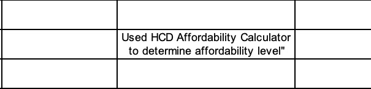
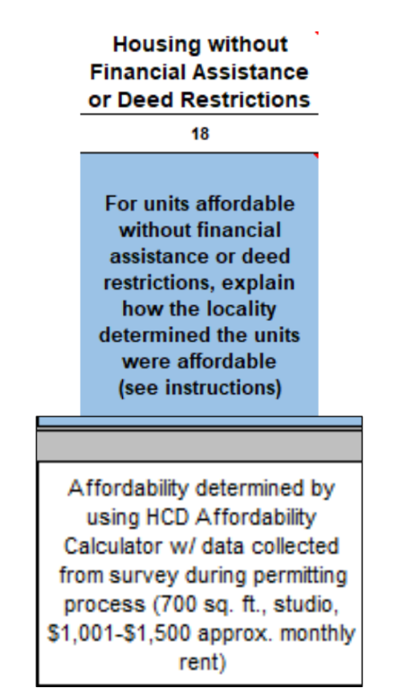

How to clean California HCD's Annual Progress Report (APR) data
California's Department of Housing and Community Development (HCD) receives Annual Progress Report (APR) submissions from cities and counties in the state to track new housing development. This gives us insight into where and how much new housing is being approved and built, including how much is from apartments vs. detached houses, how many are income-restricted, things of that nature. In theory, the submission templates are standardized in Excel templates and collated together into one big database hosted on the agency's website. In practice, Table A2 shows where this process needs some improvements.
APR rows report homes at three stages: entitlement approval, building-permit issuance and completion. I refer to these as phases below. One row can report homes at more than one phase, so adding phase counts does not give a count of distinct homes. I started out with a method advised by HCD’s APR team, which is just matching phase dates to the reporting year, so I can count housing activity in the year it occurred. However, relying on this method alone leaves out a considerable portion of valid data and introduces data quality issues by shifting some numbers into the wrong columns.
The public Table A2 CSV contains quote and escape-character errors that can disrupt parsing or put values in the wrong columns. I identified quote and escape-character problems in specific records in the public CSV and requested the corresponding original Annual Progress Report submissions from HCD’s APR team. They are included in as .xlsm workbooks, used in the code to repair damaged records and get more reliable counts of housing construction in each local jurisdiction.
Annual Progress Reports
Full Python cleaning script
Last verified snapshot: October 30, 2026 · This is a work in progress; I cannot guarantee accuracy of any output.
1. Cleaning steps
First, run python3 data-cleanup/tablea2_parsefilter_repair.py from the repository. The script reads tablea2.csv from the repository root, looks for original APR workbooks in data-cleanup/, and then writes the cleaned CSV and diagnostic files to the repository root.
The script repairs CSV quoting errors, recovers incomplete records from original APR workbooks, checks phase dates and reporting years, and removes duplicate rows. It then writes the cleaned data and diagnostic files.
for workbook recovery
and none within it?
Workbook repairs rejoin the working data before validation. After validation and APR deduplication, the script compares the date-excluded rows with the final retained rows. It separately classifies the original truncated lines against those retained records. The comparison writes a diagnostic; it does not restore excluded rows.
2. CSV quoting and escape characters
The name of the CSV format stands for "comma-separated values" which is self-explanatory. The standard CSV convention for preserving commas within a field (in other words, avoiding the separation that would otherwise occur) is to enclose the entry in double quotes, like this: "1234 Main St, City, CA". The commas remain within the address field.
Without those double quotes, each comma moves the following characters to a new column, resulting in 1234 Main St | City | CA. A double quote inside a quoted CSV field is represented by two consecutive double quotes.
Other formats use different escaping rules. JavaScript Object Notation (JSON) encloses strings in double quotes, so it uses \" to represent a quote inside the string. MySQL string literals can also use backslash escapes, unless NO_BACKSLASH_ESCAPES is enabled. A backslash does not replace the opening quote in either case.
In the public APR export, backslashes and double quotes occur in inconsistent sequences, including \" and longer runs of both characters. These sequences suggest repeated escaping. The CSV alone leaves the cause and location in the export pipeline uncertain. The repair script handles the specific patterns found in this file.

Quoting references: CSV conventions (RFC 4180) · JSON strings (RFC 8259) · MySQL string literals.
The script recognizes specific corrupted quote openers and closers before asking pandas to parse the CSV. It records which physical lines received a closer repair so they can be inspected later.
def _repair_quote_corruption(raw_text):
"""Repair known structural quote corruption using text patterns only."""
quote = chr(34)
backslash = chr(92)
opener = "," + quote + backslash + backslash + quote + quote
closer_pattern = re.compile(r"^([A-Z][A-Z ]*?)" + quote * 3 + r"([,\n\r])")
lines = raw_text.splitlines(keepends=True)The script leaves the opening-quote pattern unchanged when a space follows it.
df = pd.read_csv(io.StringIO(fixed_csv), low_memory=False, on_bad_lines="skip")
rows_loaded_main_pipeline = len(df)
on_bad_lines="skip" tells pandas to skip lines it treats as malformed. It does not guarantee that every damaged record is recovered. Short records may still load with missing fields, which we will address in the xlsm recovery step.
Cell-level repairs
The script strips one trailing quote from recognized affordability-note phrases in NO_FA_DR, NOTES and FIN_ASSIST_NAME. Shifted cells are repaired only when all four signals agree: a nonnumeric affordability field, recognized keywords, the spill marker, and empty notes.
text = df["NO_FA_DR"].astype(str)
non_numeric = pd.to_numeric(df["NO_FA_DR"], errors="coerce").isna()
has_keywords = text.str.contains(r"HCD|ABAG|affordability|Entitlement", case=False, na=False)
has_spill_marker = text.str.contains("\",\",", regex=False, na=False)
notes_empty = df["NOTES"].fillna("").astype(str).str.strip().eq("")
suspect = non_numeric & has_keywords & has_spill_marker & notes_empty
n_repaired = int(suspect.sum())
if n_repaired == 0:
return 0
shifted = df.loc[suspect, shifted_cols].copy()
df.loc[suspect, shifted_cols[:-1]] = shifted[shifted_cols[1:]].to_numpy()
df.loc[suspect, shifted_cols[-1]] = shifted[shifted_cols[0]].values3. Recovery from original submissions
The 89 incomplete CSV lines form 83 groups after combining lines with the same jurisdiction, county, reporting year, parcel number, street address and local tracking ID. The script checks each group against the original APR workbook.
For each group of incomplete CSV records, the script finds the jurisdiction’s original APR submission for that reporting year among the .xlsm workbooks provided by HCD’s APR team. It reads the workbook’s Table A2 sheet. Workbook filenames use the jurisdiction name stripped to letters and numbers, followed by the reporting year and .xlsm. The header must contain A2_1_ID and A2_18_Affordable within the first 80 worksheet rows.
The corresponding CSV fields are JURIS_NAME, CNTY_NAME, YEAR, APN, STREET_ADDRESS, JURS_TRACKING_ID. Values are stripped and uppercased; missing values normalize to empty strings. The script first looks for a matching local tracking ID, unless it is empty or N/A. If it finds none, it tries the parcel number and address together, then the parcel number alone. It uses the first of these searches that returns workbook rows. For tracking-ID lookups, the script checks the returned ID against the requested ID and records mismatches without updating the CSV.
try phase-count pairing
See pairing result below.
try phase-count pairing
Zero → screen proposed additions
5 groups in this snapshot
Matching rows by phase counts
The script tries phase-count pairing when several workbook rows have different mapped values or several CSV rows match the same project/year group. Pairing requires the same number of workbook candidates and matching APR rows. Rows with any nonzero phase count take the first unused candidate with exactly matching entitlement, permit and completion counts. Remaining candidates are assigned in order to CSV rows whose three phase counts are all zero. Candidate order can determine the pairing when several rows have the same phase counts.
if len(xlsm_rows) != len(df_idxs):
return None
phase_cols = [col for _, col in _XLSM_TO_APR_PHASE if col in df.columns]
populated, skeletons = [], []
for idx in df_idxs:
(skeletons if all((safe_int(df.at[idx, c]) or 0) == 0 for c in phase_cols)
else populated).append(idx)
used_xlsm, pairs = set(), []
for idx in populated:If the matching workbook rows would supply identical values, the script uses the earliest worksheet row. When several CSV rows match, it still tries to pair them with the original set of workbook candidates.
Workbook recovery replaces the fields listed in the mapping, including housing and affordability counts. It does not copy phase dates. Existing dates remain on updated CSV rows; newly added rows have no phase dates.
for a2_stage, prefix in (("A2_4", ""), ("A2_7", "BP_"), ("A2_10", "CO_")):
for a2_tier, tier in (("vLow", "VLOW"), ("Low", "LOW"), ("Mod", "MOD")):
mapped[f"{prefix}{tier}_INCOME_DR"] = a2_row.get(f"{a2_stage}_{a2_tier}Deed", "")
mapped[f"{prefix}{tier}_INCOME_NDR"] = a2_row.get(f"{a2_stage}_{a2_tier}None", "")
mapped[f"{prefix}ABOVE_MOD_INCOME"] = a2_row.get(f"{a2_stage}_Above", "")
mapped["JURIS_NAME"] = identity_row.get("JURIS_NAME", "")
mapped["CNTY_NAME"] = identity_row.get("CNTY_NAME", "")
mapped["YEAR"] = identity_row.get("YEAR", "")
return mappedSnapshot outcomes: Of the 83 project/year groups, 25 updated existing CSV records, 35 added records, and 1 updated two records through phase-count matching. Seventeen groups were ambiguous: 5 prior matching/pairing ambiguities plus 12 proposed additions held for review. Five groups were unresolved, for 22 unresolved or ambiguous groups after workbook recovery. There were 0 integrity errors and 0 equivalent workbook duplicates collapsed. The accepted outcomes repaired 62 CSV records.
Before adding a zero-match workbook record, the script compares parcel, address and tracking ID from both the incomplete CSV record and the workbook record with CSV rows before and after updates and with all other proposed additions. It ignores case and punctuation and recognizes ordinary whole-number parcel/tracking spellings; letters remain literal identifier content. Different known jurisdiction or reporting year prevents a link; missing jurisdiction or year does not, and county differences do not exclude it. The workbook record must supply jurisdiction, county, a whole reporting year and a usable identifier. Possible links and records with insufficient identifiers are held for review, without an automatic alternate update or merge. These are possible duplicates, not proven duplicates; held proposals contribute to ambiguity.
ambiguous_truncated_repair.csv records append-review reasons, original and current loaded-record ordinals, source physical lines, workbook and Excel-row provenance, and links to other pending proposals. Loaded-record positions identify parsed data records and are distinct from physical source-file lines.
4. Date and reporting-year checks
For each stage that reports homes, the script compares its date with the row’s reporting year.
The script excludes the row when at least one of those dates falls outside the reporting year and none falls within it. If any stage reporting homes has a date in the reporting year, the row passes this date check. Missing dates, or dates from which the script cannot extract a year, establish neither agreement nor disagreement.
To be clear, I think HCD’s initial recommendation to filter by matching phase dates to the reporting year is sound. Cities and counties are not giving us useful information about permitting and construction of new housing if they count a project stuck for several years between entitlement and permitting as a new entitlement during each of those years.
We do not know why the years may not match in a given project submission. I exclude rows whose dated activity does not support assigning the reported homes to the reporting year. Reviewing individual submissions would help establish whether the dates or the reporting year need correction.
It is a good idea to omit inaccurate information; it is better to prevent inaccuracies in the first place if the data is worth collecting. Server-side validation could flag discrepancies between phase dates and the reporting year for follow-up and correction before the data are published.
and none within?
20,219 phase mismatches
- 1 year before
- 10,383
- 2 years before
- 4,820
- 3–9 years before
- 3,682
- 10+ years before
- 76
- After report year
- 1,258
Hemet: 1,915
Palm Springs: 1,097
Brentwood: 1,025
Glendale: 915
10,404 phase mismatches
- 1 year before
- 3,073
- 2 years before
- 2,658
- 3–9 years before
- 3,636
- 10+ years before
- 405
- After report year
- 632
Glendale: 935
Imperial: 558
Contra Costa County: 496
Fullerton: 433
10,112 phase mismatches
- 1 year before
- 6,018
- 2 years before
- 2,115
- 3–9 years before
- 1,357
- 10+ years before
- 5
- After report year
- 617
Mariposa County: 700
Palm Springs: 551
Campbell: 532
Auburn: 398
Phase mismatch counts overlap and describe only the 26,559 date-excluded rows. Rows passing this date check face a separate 2018–2024 reporting-year check, which excludes another 229 rows. Missing or unparseable dates supply neither a match nor a mismatch.
if row_year is None:
return (False, False, None)
has_mismatch, has_match, first_label = False, False, None
for date_col, count_col, label in _DATE_CHECK_CONFIG:
count_int = safe_int(row.get(count_col))
if count_int is None or count_int <= 0:
continue
date_year = extract_year_from_date(row.get(date_col))
if date_year is None:
continue
if date_year == row_year:
has_match = True
else:
has_mismatch = True
if first_label is None:
first_label = label
return (has_mismatch, has_match, first_label) should_drop = status_df["has_mismatch"] & ~status_df["has_match"]
df_after_mismatch = df[~should_drop].copy()
df_dropped_mismatch = df[should_drop].copy()
df_dropped_mismatch = df_dropped_mismatch.assign(
mismatch_reason=status_df.loc[should_drop, "first_label"].fillna("")
)
| Any mismatch? | Any match? | Date-filter result |
|---|---|---|
| No | No | Keep — no assessable conflict |
| No | Yes | Keep |
| Yes | No | Drop |
| Yes | Yes | Keep — at least one phase matches |
The date parser extracts a year from a leading YYYY-style hyphenated string or a three-part slash string ending in a four-digit year. It does not validate the full calendar date. After date filtering, numeric reporting YEAR must be one of 2018–2024.
5. Removing duplicate rows
APR deduplication uses a different key from workbook recovery: jurisdiction, county, year, parcel, address, project name, homes reported for each of the three phases and demolition count. Tracking ID is not part of this key. Numeric counts are coerced, missing or invalid values become zero, and the first duplicate is retained.
This only avoids double-counting the same phase in the same year. A project that is genuinely entitled, permitted, and completed in the same year (a miracle, perhaps, but one can hope!) would be counted as such.
APR_DEDUP_COLS = [
"JURIS_NAME", "CNTY_NAME", "YEAR", "APN", "STREET_ADDRESS", "PROJECT_NAME",
*PHASE_APR_COLS, "DEM_DES_UNITS",
]def _deduplicate_apr(df):
"""Deduplicate APR rows on project identity + pipeline counts. Returns (df_deduped, n_removed)."""
cols = [c for c in APR_DEDUP_COLS if c in df.columns]
if len(cols) != len(APR_DEDUP_COLS):
return df, 0
n_before = len(df)
numeric_cols = PHASE_APR_COLS + ["DEM_DES_UNITS"]
df = df.assign(**{c: pd.to_numeric(df[c], errors='coerce').fillna(0) for c in numeric_cols if c in df.columns}
).drop_duplicates(subset=cols, keep="first")
return df, n_before - len(df)6. Checking excluded rows for duplicates in the cleaned data
I then compare the date-excluded rows with the rows retained after validation and duplicate removal. For each excluded row, the diagnostic examines entitlement, permit and completion separately, using the homes and date reported for that stage. This comparison records possible repeated activity; it never restores an excluded row.
A candidate must have the same jurisdiction, county and parcel, plus a matching tracking ID. If either tracking ID is missing, the street addresses must match instead. Two present but different tracking IDs rule out a match. A shared tracking ID with different nonempty addresses is recorded as a conflict requiring review.
The same phase must report the same positive whole number of homes and the same full calendar date. The retained row’s reporting year must equal that date’s year and differ from the excluded row’s reporting year. Unlike the date filter, this comparison validates the full date, accepting ISO dates and month/day/year dates. It compares the values available after CSV parsing and repair; it does not recover the original text’s numeric precision.
The diagnostic distinguishes phases with one possible counterpart, several possible counterparts, conflicting addresses, or too little information to compare. It also flags a retained phase that could correspond to the same phase in more than one excluded row. Address conflicts require review even when no eligible counterpart is found or another possible counterpart is available. “No candidate” means the final retained data contains no counterpart under these rules; it does not establish that the activity was never reported.
The comparison covers 26,559 date-excluded rows and 741,574 retained rows.
| Phase | Result | Count | Reported homes |
|---|---|---|---|
| Completion | Multiple candidates | 47 | 47 |
| Completion | One candidate | 2,433 | 4,478 |
| Completion | Conflicting addresses | 337 | 361 |
| Completion | Insufficient evidence | 30 | 30 |
| Completion | No candidate | 2,574 | 4,025 |
| Completion | Shared candidate | 4,691 | 6,804 |
| Entitlement | Multiple candidates | 9 | 11 |
| Entitlement | One candidate | 1,623 | 12,161 |
| Entitlement | Conflicting addresses | 190 | 883 |
| Entitlement | Insufficient evidence | 81 | 2,929 |
| Entitlement | No candidate | 6,232 | 32,322 |
| Entitlement | Shared candidate | 2,269 | 9,846 |
| Permit | Multiple candidates | 112 | 112 |
| Permit | One candidate | 7,056 | 13,804 |
| Permit | Conflicting addresses | 754 | 2,581 |
| Permit | Insufficient evidence | 79 | 107 |
| Permit | No candidate | 4,846 | 16,847 |
| Permit | Shared candidate | 7,372 | 12,721 |
The diagnostic retains the candidate row IDs and reporting years, address-conflict row IDs and sharing flags for review. Row IDs are 1-based data-record positions after the header in the date/year diagnostic and cleaned CSV respectively. They are not original source-file line numbers. Rows excluded only for an invalid reporting year are not inputs to this comparison. It searches the final retained rows, so it does not search records already removed by deduplication.
7. Output files
In this snapshot, 785,484 rows enter validation, 758,696 survive it, and deduplication removes 17,122 to produce 741,574 cleaned rows.
tablea2_cleaned_parsefilter_repair.csvmatched_truncated_repair.csvunmatched_truncated_repair.csvambiguous_truncated_repair.csvdate_year_mismatch_rows_parsefilter_repair.csvdate_excluded_phase_comparison_parsefilter_repair.csv— comparison diagnostic; excluded rows remain excluded
Truncated-line classification tries jurisdiction + county + parcel + address, then relaxes to jurisdiction + county + parcel, then jurisdiction + parcel. Because these keys omit reporting year and tracking ID, a “matched” diagnostic can refer to a retained record from another year or with a different tracking ID. Workbook recovery outcomes are counted separately.
8. Before and after cleaning
The original date filter method checked the first parseable date in permit, entitlement and completion order against the reporting year, excluding rows with no parseable date. It excluded 10.2045% of parsed rows. The current method described above excludes 3.3812% after repair.
705,435 other rows passing date check (89.7474%) · 378 known quoting corruption passing date check (0.0481%) · 80,210 date excluded (10.2045%)
758,900 other rows passing date check (96.6156%) · 23 known incomplete records passing date check (0.0029%) · 2 uncertain recovery passing date check (0.0003%) · 26,559 date excluded (3.3812%)
This comparison includes changes to the date rule and repairs; the difference cannot all be attributed to CSV repair. Repairs can also change parsed record boundaries and totals.
The red segments track known quoting corruption before repair and known incomplete records after repair. Date exclusions include another 286 known damaged records before repair and 4 after repair, counted only in orange.
The original date filter method also retained rows with incorrect values in their fields. In one Colfax record, a broken CSV boundary put the next project’s year, 2021, in the demolition-count field. The original APR workbook left that demolition field blank. The row passed the date check because its completion date matched the reporting year.
9. Recommendations
Recommendation 1: Standardize validation when reports are completed and submitted
Practically speaking, no state agency can fully guarantee that self-reported data from local jurisdictions is entirely accurate without directly monitoring local reporting operations. HCD acknowledges this limitation on its APR dataset page, stating that the agency “does not independently verify information reported by local jurisdictions in their APR form.”
Data validation can prevent entries that fail a field’s requirements from entering the data pipeline. Those requirements include the type of value, its range and its relationship to other fields. A ZIP code entered as a price and a year entered as a demolition count are both numeric, but neither belongs in that field. Validation reduces data-cleaning overhead and makes later accuracy checks more practical.
Client-side validation checks data at the point of user input. Server-side validation checks submissions when HCD receives them. The first helps local staff correct entries while completing a report; the second applies the same requirements to the submitted file, including files whose local checks have been changed or bypassed.
One example where this could help is the non-deed-restricted, or NDR, category for housing affordable to moderate-income households or below. HCD instructs jurisdictions reporting these homes to explain how affordability was determined in Field 18, “Housing without Financial Assistance or Deed Restrictions.” Its February 2026 APR webinar gives this example:

The example puts square footage, a range of dollar amounts and the method used to establish affordability in the same cell. The webinar identifies four sources for Field 18:
- Listed rent or sales price.
- Estimated rent or sales price reported by the developer.
- Estimated rent or sales price based on listed prices of comparable homes.
- A regional study of affordability by housing type published within the past two years, such as an ADU study.
If none of these sources exists, HCD directs jurisdictions to report the homes as above moderate income.
Checking whether a free-text entry supplies this information requires reading individual project descriptions. For future APR reports, separate numeric fields could collect the price or the lower and upper bounds of a price range, with a selection for monthly rent or sales price. Floor area could have its own field. A drop-down menu could identify the affordability method, accompanied by a source citation and date. HCD could then check whether the required information is present and consistently formatted across jurisdictions.
Standardized entries would also make comparisons with publicly available price data more practical. For example, unusually high or low rent estimates could be flagged for follow-up against comparable homes in the same jurisdiction, accounting for housing type, size and year. Flagged estimates would need review against the cited evidence.
Validation depends on the field: calendar dates, whole numbers of homes, percentages, street addresses and prescribed categories each need different checks. HCD’s Excel forms already include validation and protection controls, but these controls need to be applied consistently across fields and submissions.
If a category of data is worth tracking, it is worth further standardizing the reporting format for it.
Recommendation 2: Use server-side validation to process APR submissions
Validation should continue through the agency’s internal processing and publication of statewide data. The inconsistent escape-character sequences described above can disrupt column parsing even when a submission was valid in its original spreadsheet.
The public CSV alone cannot establish whether an error originated in a local submission or arose while HCD imported, combined or exported the data. Cells containing formulas or fixed labels can be protected from edits, and usually are, but client-side checks can be bypassed. HCD should therefore repeat the validation checks server-side when it receives submissions.
A huge thank-you to Farzad Mashhood and the entire APR team at apr@hcd.ca.gov for their advice and for providing the original submissions used in this analysis.